Kasim Davidson likes to take pictures of the blue skies and sunsets and clouds with his iPhone 14 Pro camera. The first picture was one I took when I had a vacation to Niagra Falls.
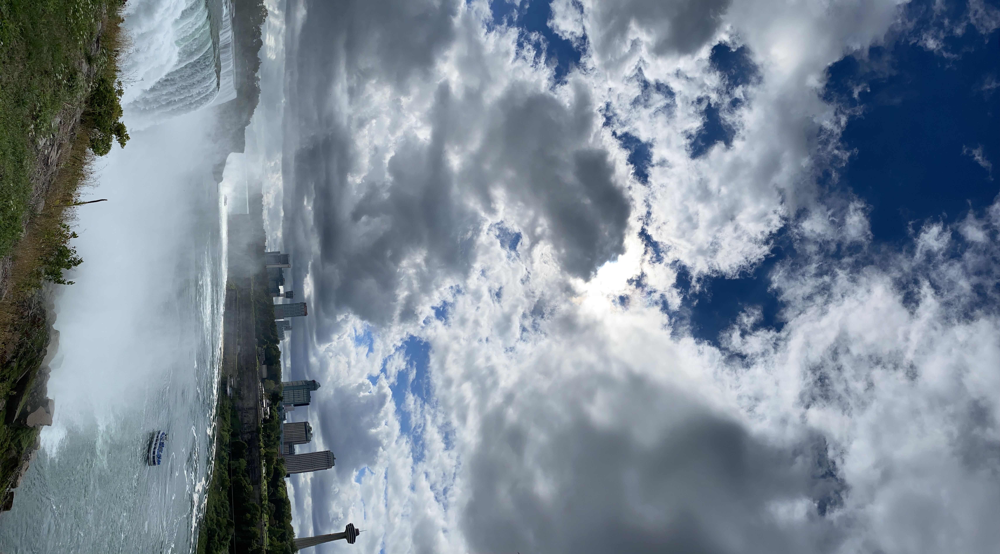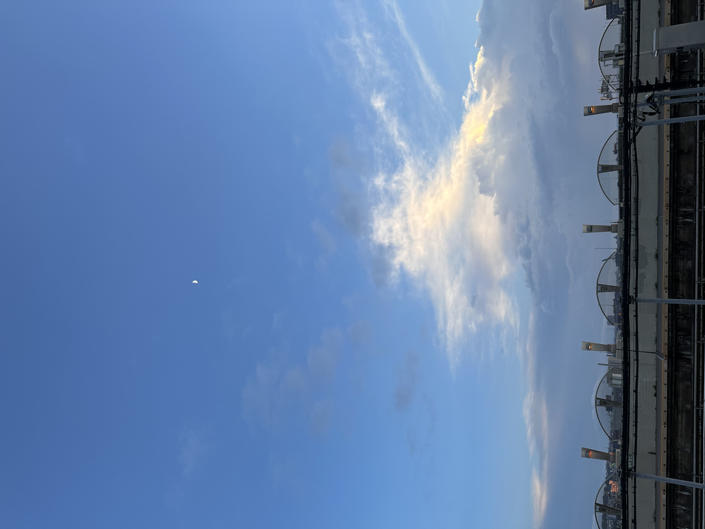
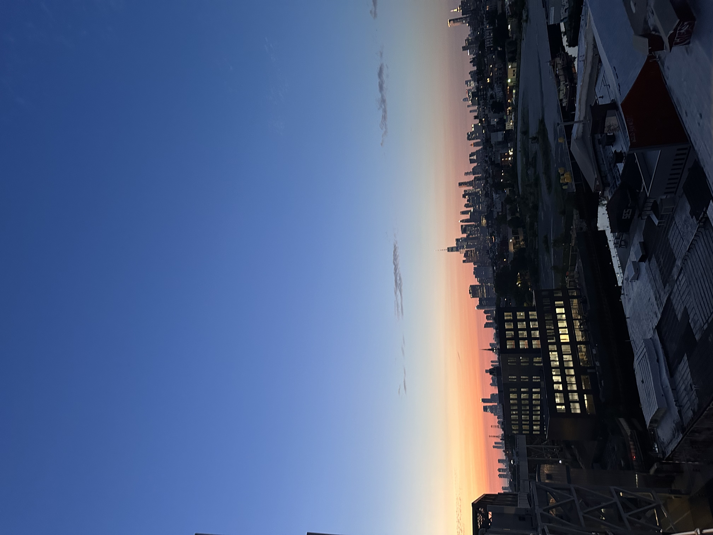

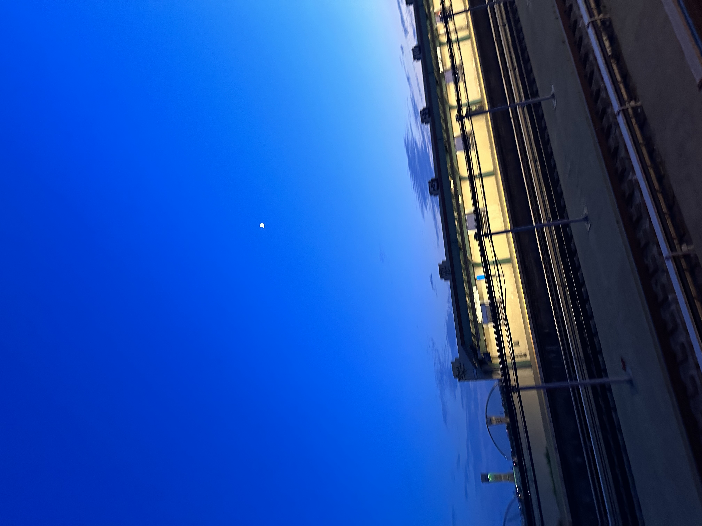
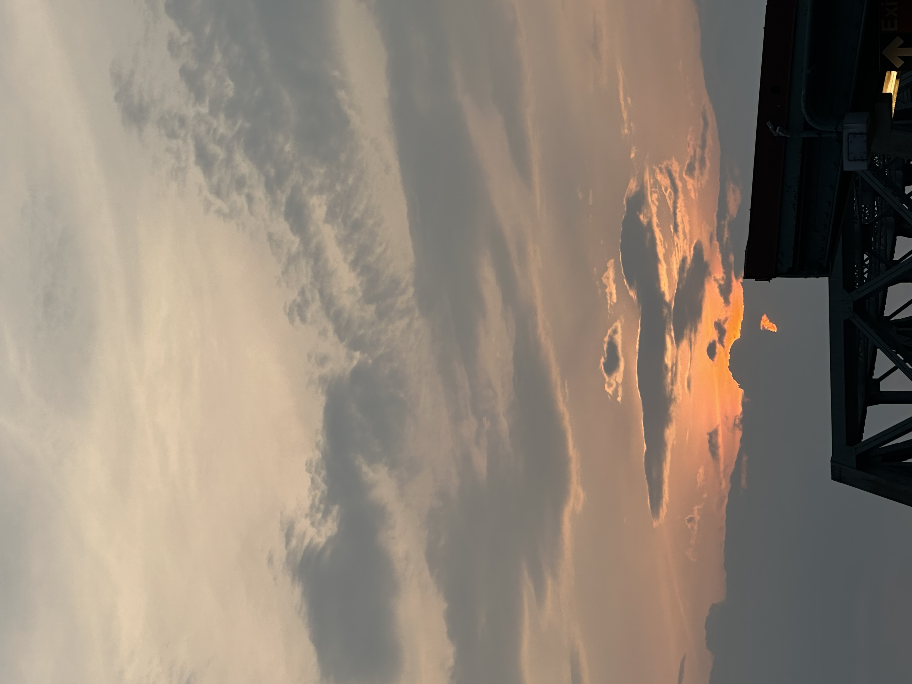
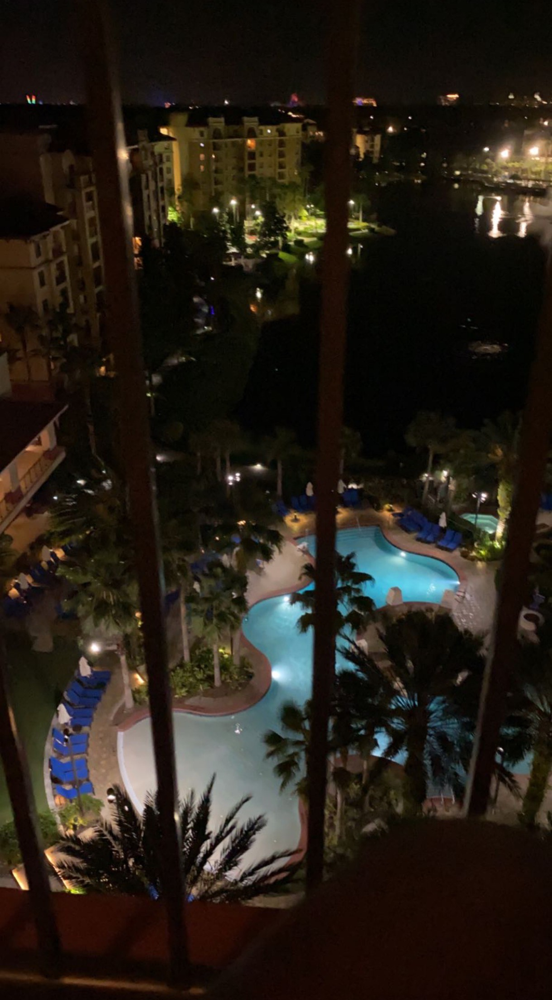
Games
Games that Kasim is decent at:


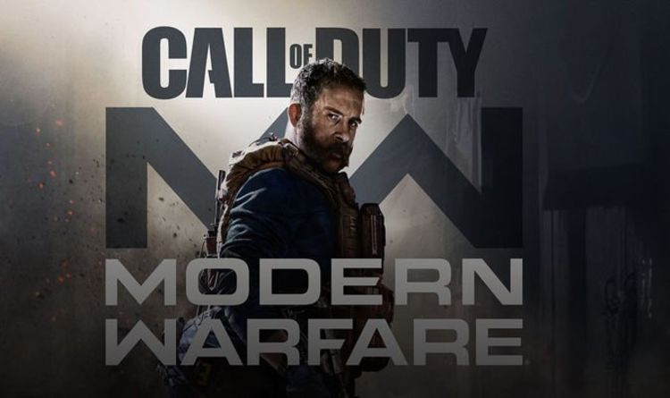
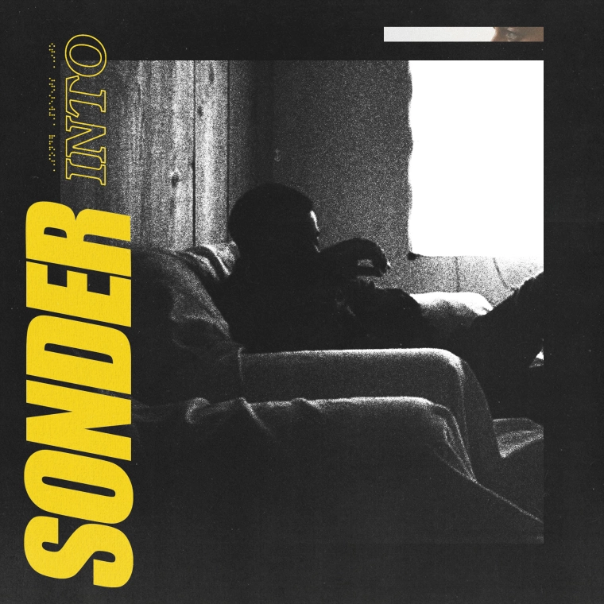 i was" height="230"> 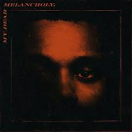
 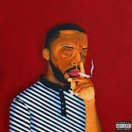
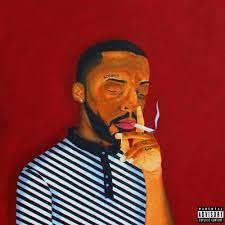
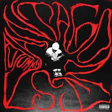 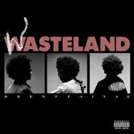

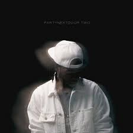 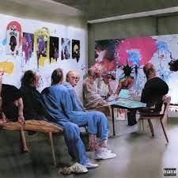 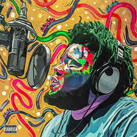
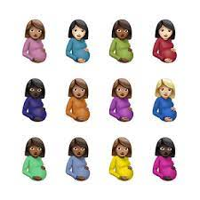 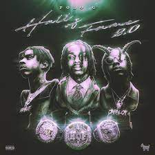 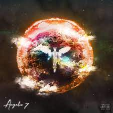
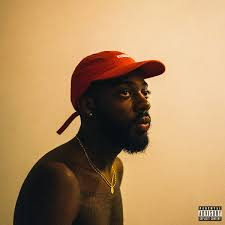 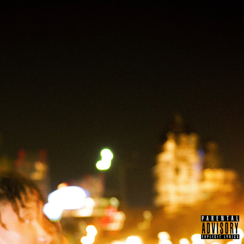 Them (Hate It!)" height="230">
 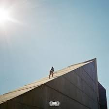
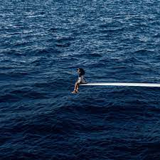
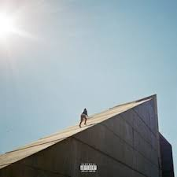
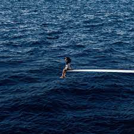
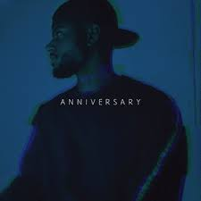
 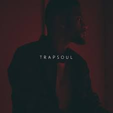
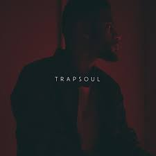
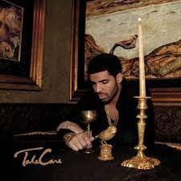 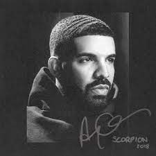 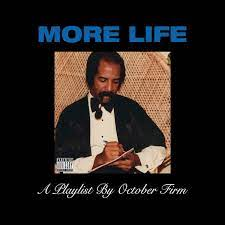
 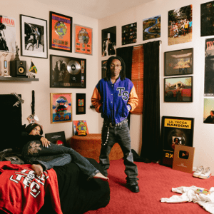
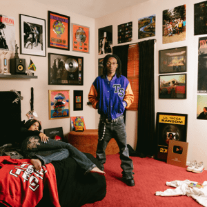

"Yeah, this is the type of music I listen to on a day-to-day basis. There can't be a day where I'm not listening to music. Though, I think that everybody needs music in their lives. I feel like music brings out a person their true real self and show their personality more making them most reachable and open to relationships." - Kasim